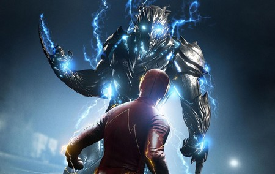
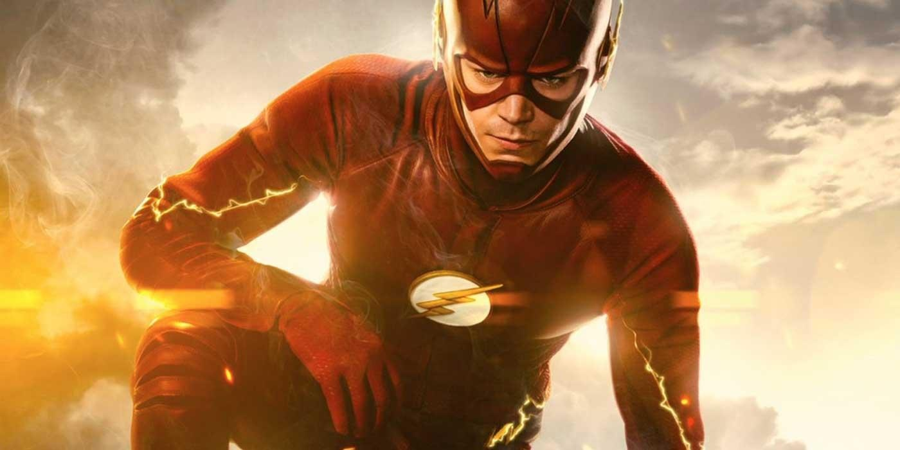
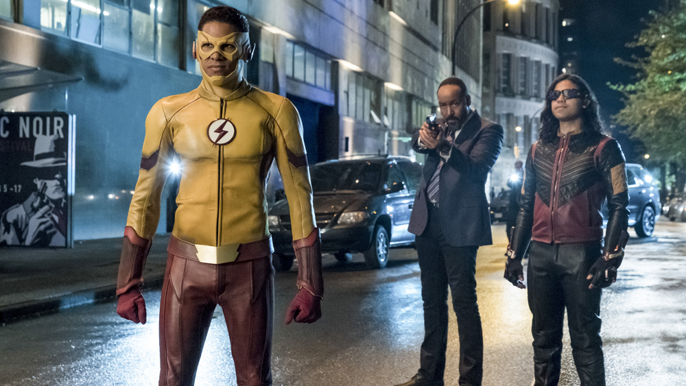

Series Televisivas
The Flash
The Flash es una serie de televisión estadounidense desarrollada por Greg Berlanti, Andrew Kreisberg y Geoff Johns para la cadena The CW. El episodio piloto fue dirigido por David Nutter. La historia se basa en el superhéroe de DC Comics, Flash, específicamente en Barry Allen, el segundo individuo en tomar dicha identidad. Se trata además de un spin-off de Arrow, serie de televisión basada en Flecha Verde, por lo cual comparten el mismo universo de ficción.1 Fue estrenada el 7 de octubre de 2014.4 El 21 de octubre de 2014, The CW ordenó una temporada completa de veintitrés episodios

Cuando Barry Allen solo tenía 11 años, su madre fue asesinada en un extraño y terrorífico incidente, en el cual estuvo involucrado un hombre en un traje amarillo y su padre fue falsamente culpado del asesinato. Su vida cambió para siempre por la tragedia; Barry fue adoptado y criado por el detective Joe West, el padre de la mejor amiga de Barry, Iris. Ahora, Barry se ha convertido en un brillante investigador CSI, cuya determinación es descubrir la verdad sobre la extraña muerte de su madre, le lleva a seguir todas las leyendas urbanas sin explicación y los avances científicos que surjan. La última obsesión de Barry es un acelerador de partículas de alta tecnología, creado por el visionario físico Harrison Wells y su equipo de S.T.A.R. Labs, que afirma que su invención aportará avances inimaginables en poder y medicina.

Meses después de haber cerrado la singularidad creada en S.T.A.R. Labs, Flash es reconocido como héroe en Ciudad Central. Mientras tanto, Jay Garrick, el Flash de un universo paralelo -quien ha llegado a través de una brecha creada por la singularidad y perdido sus poderes en el camino-, visita a Barry y le advierte que otro velocista llamado Zoom está tratando de eliminar a todas las personas que poseen la fuerza de velocidad en todo el multiverso. Jay trabaja para ayudar a Barry a detener Zoom. Que con el tiempo descubren que Jay en realidad era un remanente de tiempo de Zoom. El Dr. Harrison Wells de tierra 2 esta haciendo todo lo posible para salvar a su hija Jesse ya que Zoom la tiene secuestrada, Barry, Cisco y Harry viajan a tierra 2 para salvarla en donde se encuentran con sus doppelgängers.
